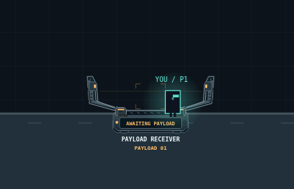
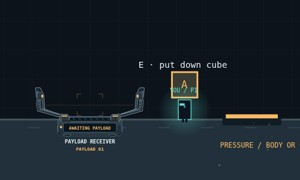
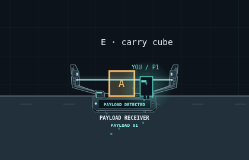
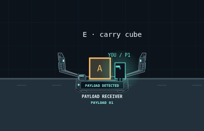
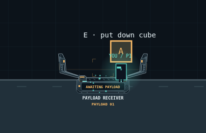
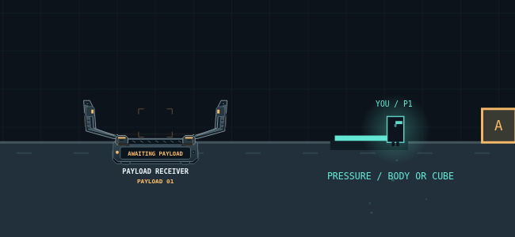
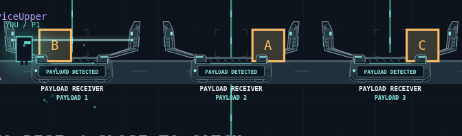
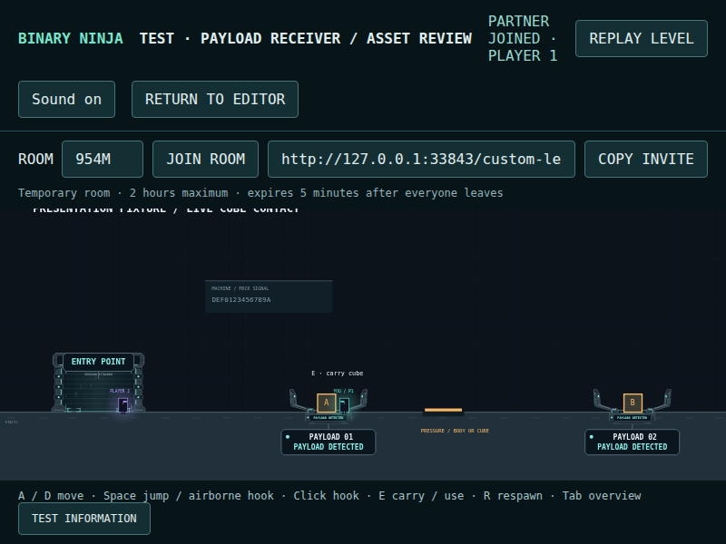
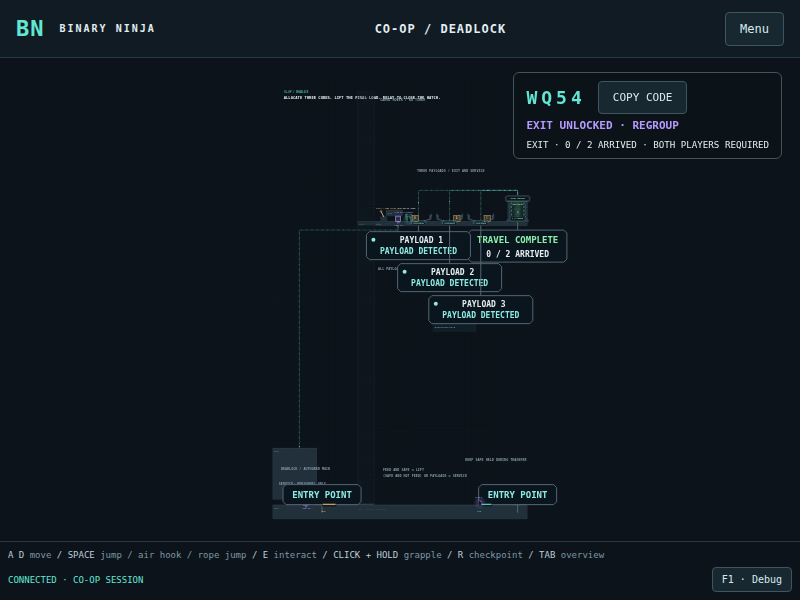
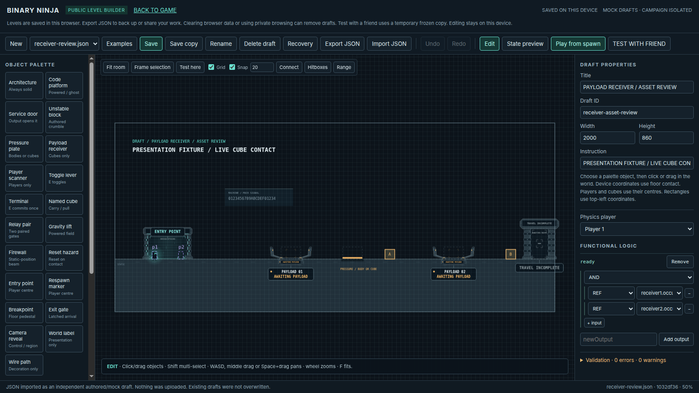

BINARY NINJA / INDUSTRIAL CARGO DOCK · 16 OCTOBER 2026Actual production-mode browser captures. Public custom multiplayer + full DEADLOCK physical solve. No gameplay-state injection.

A grounded player leaves the receiver amber.

Carried cargo has not activated the receiver.

A thin scan crosses the cargo after accepted contact.

Steady cyan circuitry; the cube stays visible and removable.

Release begins immediately; status returns to amber.

The low pressure plate accepts the standing player.

Actual authored-start solve. Off-centre placements remain valid.

800 × 600 client; readable anchored status.

Individual status badges use separate lanes at low zoom.

The same Canvas renderer draws editable socket objects.